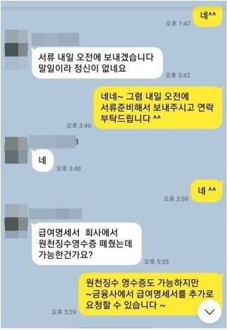
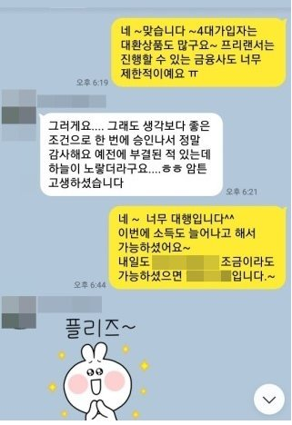

개인회생 면책 4대미가입 직장인 기존고금리 대환및 추가자금 성공사례!!
안녕하세요~ 오늘은 제가 상담 진행해드린 조**고객님의 대출 사례를 안내해 드리겠습니다.
조** 고객님께서는 회생면책 받은지 얼마되지 않은 4대보험 미가입 직장인 이셨으며, 재직기간 1년 6개월,
월소득은 250만원 정도 되셨습니다. 고객님께서는 기존에 사용하던 대출 금리가 높아서 대환과 추가자금이
필요하여 문의 주셨습니다. 대출은 조이크레디트 500만원, 밀리언 600만원, 유아이 600만원, sbi저축 900만원
+ 800만원(2건) 이용 중이셨고, 대출 건수가 많아 쉽지 않은 상황이였지만, 저는 상담 후 개인회생 면책자
대출로 진행해 드렸고, 그 결과 한 금융사에서 1400만원 승인되어 기존대출을 좀더 낮은
이율로 대환하고 급하게 필요한 추가자금까지 마련하실 수 있어 매우 만족해 하셨습니다. 아래는 실제
저와 조**고객님의 카톡 상담 내용 일부를 캡쳐한 내용이니 자세한 내용은 아래 카톡 이미지
확인 부탁드립니다. 그럼 이만 줄이겠습니다. 감사합니다~ ^^

